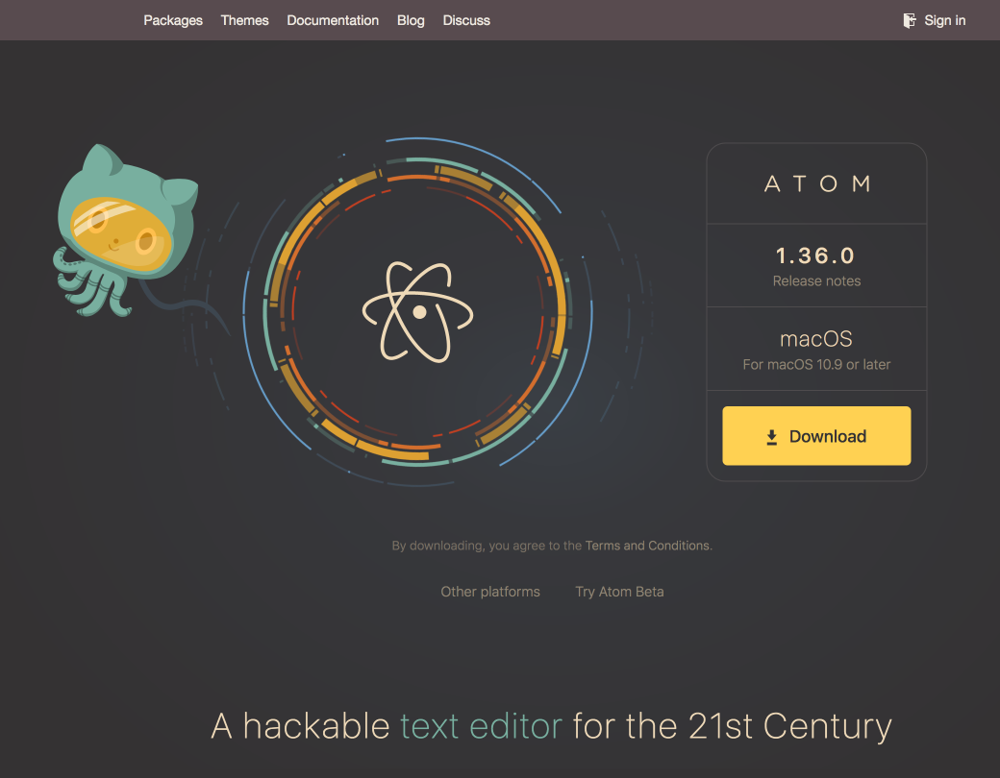

Chapter 1: Getting Started
Chapter 2: Using Atom
- Atom Packages
- Moving in Atom
- Atom Selections
- Editing and Deleting Text
- Find and Replace
- Snippets
- Autocomplete
- Folding
- Panes
- Pending Pane Items
- Grammar
- Version Control in Atom
- GitHub package
- Writing in Atom
- Basic Customization
- Summary
Chapter 3: Hacking Atom
- Tools of the Trade
- The Init File
- Package: Word Count
- Package: Modifying Text
- Package: Active Editor Info
- Creating a Theme
- Creating a Grammar
- Publishing
- Iconography
- Debugging
- Writing specs
- Handling URIs
- Cross-Platform Compatibility
- Converting from TextMate
- Hacking on Atom Core
- Contributing to Official Atom Packages
- Summary
Chapter 4: Behind Atom
- Configuration API
- Keymaps In-Depth
- Scoped Settings, Scopes and Scope Descriptors
- Serialization in Atom
- Developing Node Modules
- Interacting With Other Packages Via Services
- Maintaining Your Packages
- How Atom Uses Chromium Snapshots
- Summary
Appendix A: Resources
Appendix B: Shadow DOM
Appendix C: Upgrading to 1.0 APIs
Appendix D: Atom server-side APIs
Improve this page
Installing Atom
To get started with Atom, we'll need to get it on your system. This section will go over installing Atom on your system as well as the basics of how to build it from source.
Installing Atom should be fairly simple. Generally, you can go to https://atom.io and at the top of the page you should see a download button as shown here:



The button or buttons should be specific to your platform and the download package should be easily installable. However, let's go over them here in a bit of detail.
Installing Atom on Mac
Atom follows the standard Mac zip installation process. You can either press the download button from the https://atom.io site or you can go to the [Atom releases page][releases] to download the atom-mac.zip file explicitly. Once you have that file, you can click on it to extract the application and then drag the new Atom application into your "Applications" folder.
When you first open Atom, it will try to install the atom and apm commands for use in the terminal. In some cases, Atom might not be able to install these commands because it needs an administrator password. To check if Atom was able to install the atom command, for example, open a terminal window and type which atom. If the atom command has been installed, you'll see something like this:
which atom /usr/local/bin/atom $
If the atom command wasn't installed, the which command won't return anything:
which atom
$
To install the atom and apm commands, run "Window: Install Shell Commands" from the Command Palette, which will prompt you for an administrator password.
Installing Atom on Windows
Atom is available with a Windows installer that can be downloaded from https://atom.io or from [Atom Releases][releases] named AtomSetup.exe. This setup program will install Atom, add the atom and apm commands to your PATH, and create shortcuts on the desktop and in the start menu.

The context menu Open with Atom in File Explorer, and the option to make Atom available for file association using Open with..., is controlled by the System Settings panel as seen above.
With Atom open, click on File > Settings, and then the System tab on the left. Check the boxes next to Show in file context menus, as well as Show in folder context menus. And you’re all set.
Installing Atom on Linux
You can install Atom on Linux using your distribution's package manager by configuring it to use one of our official package repositories. This will also enable you to update Atom when new releases are published.
Debian and Ubuntu (deb/apt)
To install Atom on Debian, Ubuntu, or related distributions, add our official
package repository to your system by running the following commands:
curl -L https://packagecloud.io/AtomEditor/atom/gpgkey | sudo apt-key add - sudo sh -c 'echo "deb [arch=amd64] https://packagecloud.io/AtomEditor/atom/any/ any main" > /etc/apt/sources.list.d/atom.list' sudo apt-get update
You can now install Atom using apt-get (or apt on Ubuntu):
# Install Atom sudo apt-get install atom # Install Atom Beta sudo apt-get install atom-beta
Alternatively, you can download the Atom .deb package and install it directly:
# Install Atom sudo dpkg -i atom-amd64.deb # Install Atom's dependencies if they are missing sudo apt-get -f install
Red Hat and CentOS (YUM), or Fedora (DNF)
To install Atom on CentOS, Oracle Linux, Red Hat Enterprise Linux, Scientific Linux, Fedora, or related distributions that use the YUM or DNF package managers, add our official package repository to your system by running the following commands:
sudo rpm --import https://packagecloud.io/AtomEditor/atom/gpgkey sudo sh -c 'echo -e "[Atom]\nname=Atom Editor\nbaseurl=https://packagecloud.io/AtomEditor/atom/el/7/\$basearch\nenabled=1\ngpgcheck=0\nrepo_gpgcheck=1\ngpgkey=https://packagecloud.io/AtomEditor/atom/gpgkey" > /etc/yum.repos.d/atom.repo'
You can now install Atom using dnf (or yum depending on your distribution):
# Install Atom sudo dnf install atom # Install Atom Beta sudo dnf install atom-beta
Alternatively, you can download the Atom .rpm package and install it directly:
# On YUM-based distributions sudo yum install -y atom.x86_64.rpm # On DNF-based distributions sudo dnf install -y atom.x86_64.rpm
SUSE (zypp)
To install Atom on openSUSE or other distributions that use the Zypp package manager, add our official package repository to your system by running the following commands:
sudo sh -c 'echo -e "[Atom]\nname=Atom Editor\nbaseurl=https://packagecloud.io/AtomEditor/atom/el/7/\$basearch\nenabled=1\ntype=rpm-md\ngpgcheck=0\nrepo_gpgcheck=1\ngpgkey=https://packagecloud.io/AtomEditor/atom/gpgkey" > /etc/zypp/repos.d/atom.repo' sudo zypper --gpg-auto-import-keys refresh
You can now install Atom using zypper:
# Install Atom sudo zypper install atom # Install Atom Beta sudo zypper install atom-beta
Alternatively, you can download the Atom .rpm package and install it directly:
sudo zypper in -y atom.x86_64.rpm
Portable Mode
Atom stores configuration and state in a .atom directory usually located in your home directory (%userprofile% on Windows). You can however run Atom in portable mode where both the app and the configuration are stored together such as on a removable storage device.
To setup Atom in portable mode download the zip/tar.gz package for your system and extract it to your removable storage.
Then create a .atom directory alongside the directory that contains atom.exe, for example:
e:\atom-1.14\atom.exe
e:\.atom
Then create a .atom directory alongside the Atom.app application, for example:
/MyUSB/Atom.app
/MyUSB/.atom
Then create a .atom directory alongside the directory that contains the Atom binary, for example:
/media/myusb/atom-1.14/atom
/media/myusb/.atom
Portable Notes
- The
.atomdirectory must be writeable - You can move an existing
.atomdirectory to your portable device - Atom can also store its Electron user data in your
.atomdirectory - just create a subdirectory calledelectronUserDatainside.atom - Alternatively you can set the
ATOM_HOMEenvironment variable to point wherever you want (you can write a .sh or .cmd script to temporarily set it and launch it from that) - Portable mode installations will not automatically update
Building Atom from Source
The Hacking on Atom Core section of the flight manual covers instructions on how to clone and build the source code if you prefer that option.
Proxy and Firewall Settings
Behind a Firewall?
If you are behind a firewall and seeing SSL errors when installing packages you can disable strict SSL by running:
apm config set strict-ssl false
Using a Proxy?
If you are using a HTTP(S) proxy you can configure apm to use it by running:
apm config set https-proxy YOUR_PROXY_ADDRESS
You can run apm config get https-proxy to verify it has been set correctly.